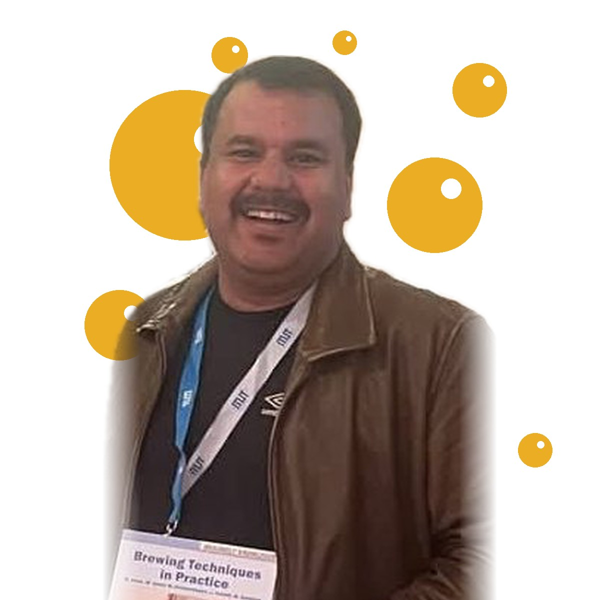
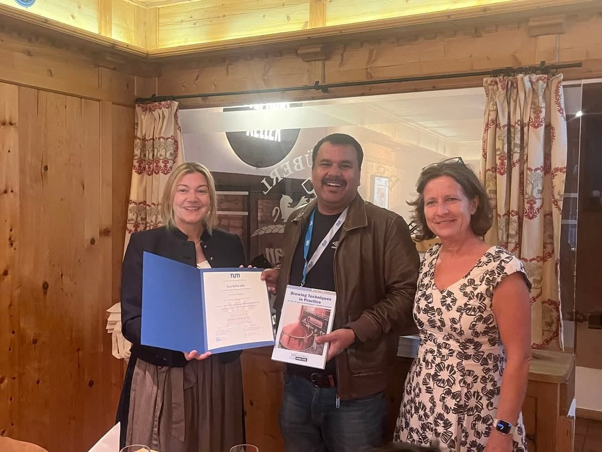
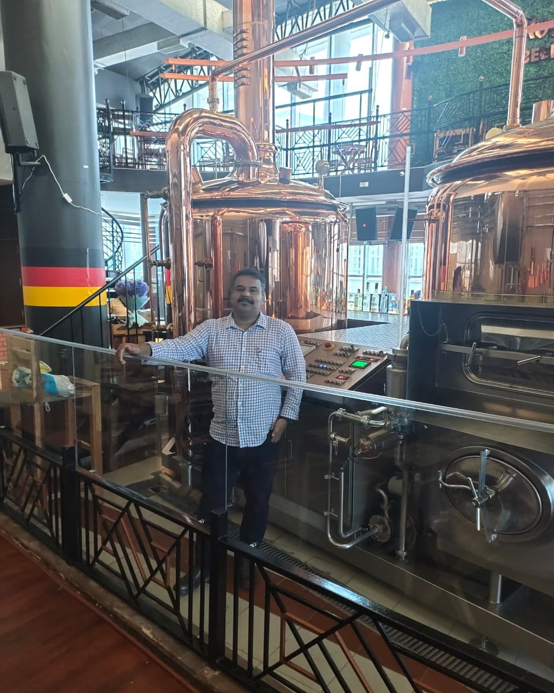
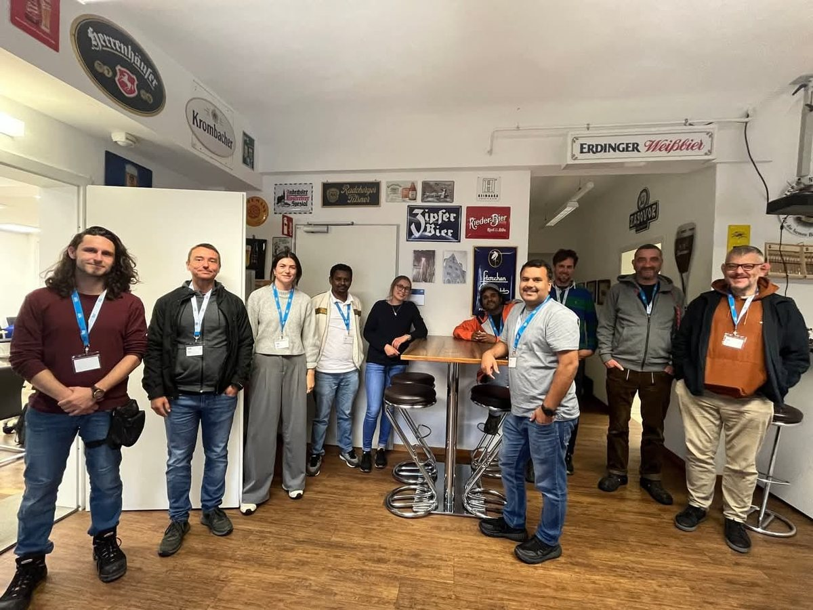
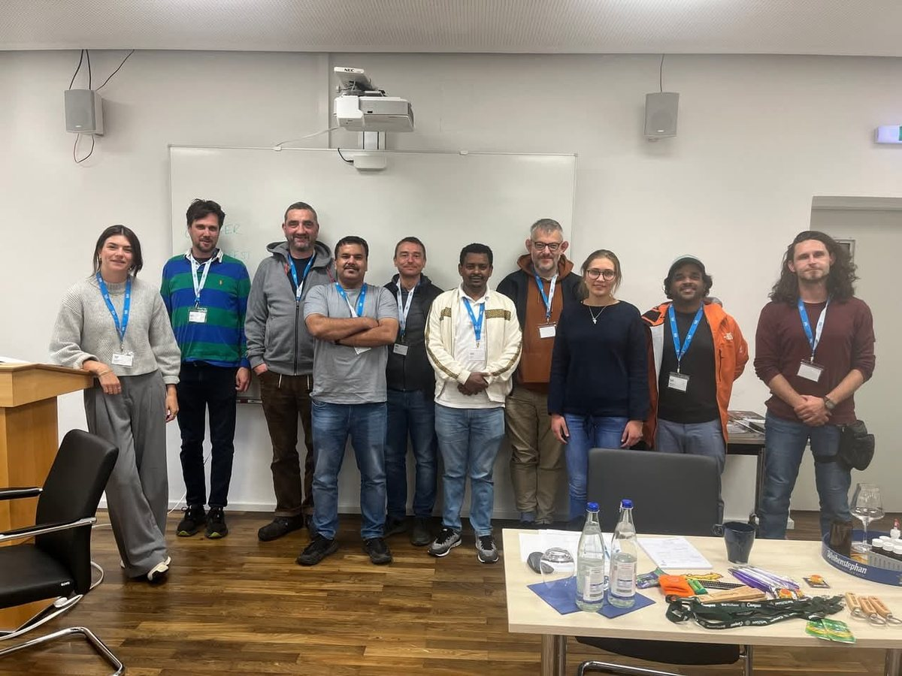

Senior Mentor · Master Brewer
A.V. Ganesh Ramu
మా అత్యంత సీనియర్ మెంటార్. Institute of Brewing and Distilling నుంచి Master Brewer, జర్మనీ, యూకే, న్యూజిలాండ్, సింగపూర్, భారతదేశాల్లో బ్రూయింగ్లో 38 ఏళ్ళ అనుభవం ఉంది.
Best on a laptop or desktop: the maps, filters and tables have more room there.

రాహుల్ సర్టిఫైడ్ జర్మన్-స్టైల్ బ్రూమాస్టర్. ఆయనకు ఫుడ్ బయోటెక్నాలజీలో M.Tech. ఉంది. టెక్నికల్ యూనివర్సిటీ ఆఫ్ మ్యూనిచ్లోని చారిత్రక బ్రూవరీ Weihenstephan లో ఆయన బ్రూయింగ్ సర్టిఫికేషన్ పొందారు.
ఆయన బ్రూయింగ్ అసలైన జర్మన్ టెక్నిక్, స్థిరమైన ఫలితాల మీద ఆధారపడి ఉంటుంది, 10 hl Caspary, Kaspar Schulz brewhouses మీద. గత దశాబ్దంలో JW Marriott చండీగఢ్, భారతదేశపు మొదటి జర్మన్ బ్రూవరీ Rockmann Beer Island వంటి వేదికలకు కన్సల్టెంట్ బ్రూ మాస్టర్గా పనిచేశారు.
ఆయన మొత్తం బ్రూయింగ్ ప్రక్రియను, దాని చుట్టూ బ్రూవరీ నడపడాన్ని కవర్ చేస్తారు: స్టార్ట్-అప్లు, ఎక్సైజ్ కంప్లయన్స్, టీమ్ పర్యవేక్షణ, యీల్డ్, ముడి పదార్థాల సేకరణ. ఉత్తర భారతదేశం అంతటా ఉన్న విద్యార్థుల కోసం ఆయన ఢిల్లీ నుంచి Craft Beer School కు నేర్పిస్తారు.




మా అత్యంత సీనియర్ మెంటార్. Institute of Brewing and Distilling నుంచి Master Brewer, జర్మనీ, యూకే, న్యూజిలాండ్, సింగపూర్, భారతదేశాల్లో బ్రూయింగ్లో 38 ఏళ్ళ అనుభవం ఉంది.
United Breweries, SABMiller, AB InBev లలో R&D విభాగంలో పనిచేసిన Master Brewer. ఆ తర్వాత డేటా సైంటిస్ట్గా AB InBev గ్లోబల్ బిజినెస్ యూనిట్ల కోసం AI, GenAI నిర్మించారు.
అడ్వర్టైజింగ్లో 30+ ఏళ్ళు, క్రాఫ్ట్ బీర్ అంటే ఎంతో ఇష్టం. ప్రతి సెషన్కూ బీర్ కథలు, బ్రాండింగ్, వ్యాపారం తీసుకొస్తారు.
సామాజిక బాధ్యత, విద్య, ఆపరేషన్స్లో 15+ ఏళ్ళ అనుభవం. ధాన్యం నుంచి గ్లాస్ వరకు, ప్రతి బ్యాచ్ విద్యార్థులూ సాఫీగా సాగేలా చూసుకుంటారు.